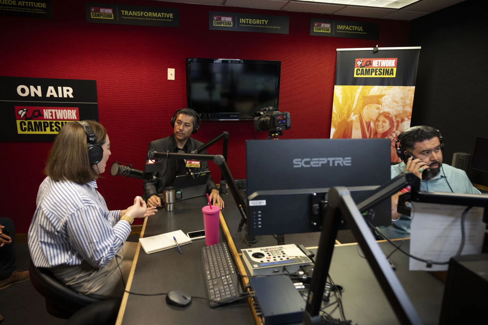

One recent morning, Tony Arias and Idelfonso Armenta, the hosts of a popular show on the Arizona radio station La Campesina, invited their listeners to talk about the election. “Mi raza,” Arias said, leaning into the microphone. “Donald Trump or Kamala Harris? We want to hear from you.”
Arias and Armenta’s show is called “Los Chavorrucos,” a play on the words “young geezers.” Armenta is a tall, heavyset man in his forties with a resonant baritone voice; Arias—three years younger, shorter, and thinner—sounds comically chirpy by comparison. From 6 A.M. to 10 A.M., the two supply banter, musical hits, and news to an audience of more than a hundred thousand Latino workers. The show sounds like a conversation among friends, but the audience is considerable enough to have caught President Joe Biden’s attention. Last year, during his reëlection campaign, he called in from the Oval Office and took questions about immigration, the economy, and disinformation.
Radio guest Carolina Rodriguez-Greer, with Mi Familia Vota, from left, host Osvaldo Franco and engineer Daniel Orona conduct a live broadcast at the Phoenix studio of La Campesina, a Spanish-language radio network, Wednesday, March 20, 2024. (AP Photo/Serkan Gurbuz)
During the appearance, Biden made a characteristic effort at personal connection. “I’m looking at a statue of Cesar Chavez, who almost cost me an election in 1972,” he told the hosts. La Campesina, which broadcasts out of a red brick building in the Phoenix neighborhood of Eastlake Park, was founded by Cesar Chavez, in 1983. Arias and Armenta sit across from each other at a wooden desk built by one of Chavez’s younger brothers. The morning of my visit, Armenta was working the console, its needles bouncing to the sound of norteños, as Arias surveyed the responses coming in. “If we don’t air their audios,” Arias said, his eyes widening as he scrolled, “we get scolded.”
Both men started in radio early. Armenta, who is from the Mexican border town of Nogales, hosted his first show, “De Corazón a Corazón,” at the age of seventeen. He later moved to Arizona, where he worked in construction and bounced around radio jobs until he heard of an opening at La Campesina. Arias started his own show in Phoenix and developed a following in the city’s immigrant community. On and off the air, he became an advocate for families who were being terrorized by the former sheriff of Maricopa County, Joe Arpaio, an anti-immigration zealot.
Today, their reach extends to Arizona, California, Nevada, and beyond. In Las Vegas, an army of service workers—bellhops, cooks, servers, and room attendants—tune in each morning. Farmworkers who follow crops from state to state, as part of what is known as “la corrida,” take their radios wherever they go. In the border town of Yuma, the station’s signal streams south into Mexico, where it is known as “la estación gringa.”
Of the seven battleground states, Arizona has the largest percentage of eligible Latino voters, representing a quarter of the electorate. But Trump and Harris have been late in reaching them: in August, a poll showed that half of Latino voters hadn’t heard from either campaign. Leading advocacy groups recently sent a letter to Republican and Democratic leaders condemning both parties’ “abysmal outreach.” For Spanish-speaking residents of Arizona, the crucial political conversation is happening not at campaign events and town halls but on trusted outlets like La Campesina.
In 2020, Biden won Arizona by more than ten thousand votes, but Harris, after a promising start, has lagged there. The Chavorrucos weren’t too concerned with fluctuations in polls; they wanted to hear from listeners and share their mikes. “It’s our way of saying, ‘Your opinion is worthy—go on, dive in,’ ” Armenta said. He flashed a hand signal to Arias: twenty seconds. The first song of the hour was drawing to an end, and Arias was still trimming people’s audios.
Just as time was running out, Arias turned to the mike and opened the segment. “Ay dios, how hard it is to go from ‘I love you’ to ‘I loved you,’ ” he said. “But it is harder even to go by a taquería and be cash-strapped.” The two hosts burst into laughter, then turned to people’s opinions.
One listener was fixated on Trump’s false claim that immigrants in Ohio ate dogs and cats. Armenta responded, “All we can say is that it’s a mitote”—an unfounded rumor. “It’s very easy to talk with no base whatsoever, no proof to back what you’re saying. And that’s one of Donald Trump’s qualities.”
Before calling for a music break, the hosts had a question for their listeners: Who, in their view, would make their lives better?
The studio’s phone rang: “Campesino, good morning,” Armenta said. “Who do I have the pleasure of speaking with?” He covered the phone and turned to Arias, saying, “His name is Sigifrido.”
Arias picked up the call: “All right, we’ve got Sigifrido on the line with us. Tell us your thoughts.”
“I think people who are calling in and sharing their views about Kamala Harris have no idea of what they’re saying. It’s the same old cantaleta”—the same old refrain.“I think, if she wins, nothing’s going to change,” he said. “We’re going to have better opportunities with Donald Trump.” The man went on, “Many things will benefit us: closing the border, lowering taxes, more jobs.”
“When you say closing the border, what do you mean?” Armenta asked.
“These days, things are a little tough here in the country. And the more people come, the worse it gets.”
Sigifrido was the minority opinion that morning. The callers, mostly women, were overwhelmingly siding with Harris. But Trump holds a narrow lead in the Grand Canyon State. “I think people have got to understand that the direction this country will take is in their hands,” Armenta said in closing. A sizable portion of the Latino electorate remained undecided, but if Arizona had become a swing state in 2020, after more than two decades of Republican hegemony, it was in part thanks to them. “The best thing we can do is stay informed,” Arias went on. “And, above all, go out and vote.”
Few of La Campesina’s current staffers got to meet Chavez, who died in 1993, but he is resonant in their imagination. Outside the studio, the walls are festooned with memorabilia bearing his image: paintings, photographs, vinyl records, cereal boxes.
Early on, Chavez understood that organizing seasonal farm workers would require effective mass communications. When he moved to California’s Central Valley, in 1962, he set up a mimeograph machine on his back porch to print out leaflets. “This was before anybody knew anything about Cesar Chavez,” his middle son, Paul, told me. He filled his old Mercury station wagon with boxes of leaflets, and enlisted his eight children to disseminate them. “He’d leave a couple of us on one corner, a couple more on the other corner, and our job was to hand out leaflets,” Paul said. “He really leafleted the whole Central Valley.”
He scribbled down the name as he took other suggestions. Then he said, “Radio Campesina—I like it.”
As the message spread and the union took shape, Chavez set up a print shop and began publishing a newspaper called El Malcriado (“The Rebellious One”). His intent was to communicate directly with workers and to counter growers’ efforts against the union. “People had tried for over a hundred years to organize farm workers,” Paul said. “All of the attempts were brutally crushed.” Union members were regularly beaten up, arrested, stripped naked, and chained. They were threatened with loaded guns, and at least five were killed on the picket line or while organizing workers. Chavez saw that music was a way to reach people surreptitiously. Farmworkers often carried transistor radios with them to ease the monotony of their work. Paul recalled that his father would often say, “If we had a radio station, instead of talking to hundreds, or a few thousand people a day, we could talk to fifty thousand.”
In 1983, Chavez acquired his first radio license, in Woodlake, California. During a meeting with the station’s staff, he stood by an easel pad, taking suggestions for a name. When a top contender emerged—“El Aguila Vuela,” or “The Eagle Soars”—one attendee, an organizer in her thirties named Cynthia Bell, rolled her eyes and whispered to her neighbor, “Always macho names.” Some of the attendees grumbled, but Chavez wanted to know what else Bell had in mind. “What about Campesina?” she said. He scribbled down the name as he took other suggestions. Then he said, “Radio Campesina—I like it.”
A neon sign hangs in the radio station.(NPR/Caitlin O'Hara)
At that point, “we saw the power of using the radio to call out people for the things they were doing under the cover of darkness.”
Bell was put in charge of the station, running a team of six. Until they secured a building in Woodlake, they operated from a cavernous space in the union headquarters, which had previously housed a tuberculosis sanatorium. Chavez had enlisted a radio host from Washington State to teach the basics of interviewing, editing, and recording music. They were on air for twenty hours a day, beginning at four in the morning, when farm workers typically headed for the fields. A map of the San Joaquin Valley was hung on the wall, with a circle over the broadcast area.
An engine of the farmworkers movement, music came to dominate La Campesina’s programming: norteña, ranchera, romántica, and corrido, but also jazz. “They would send us a lot of free records, in English and Spanish,” Bell recalled. “Benny Goodman was Cesar’s favorite.” Between songs, La Campesina provided a forum for farmworkers to air grievances. Bell remembered taking calls from workers who had been poisoned by pesticides or who wanted to expose an outbreak of hepatitis at work. If a child had gone missing or a labor petition was going around, La Campesina would break the news. In places like Bakersfield, the station commanded fifty per cent of the market. “We were kicking Rush Limbaugh’s ass,” Paul said.
One of the most popular shows was “Despierta Ya Campesino” (“Wake Up, Farmworker”). Its host, Pepe Escamilla, had a boisterous manner and a gift for getting people to open up. One day, farmworkers called to accuse their foreman of sexually abusing women. Escamilla asked for a description—his name, if he had a wife or any children, where he went to Mass—and then denounced him on air. “He touched a nerve,” Paul said. The foreman called in, threatening “to kill everybody and burn the station.” Then, Paul said, “he called again and said, ‘O.K., I won’t do it anymore.’ ” At that point, “we saw the power of using the radio to call out people for the things they were doing under the cover of darkness.”
After Chavez’s death, Paul drove out to Woodlake to address the station’s workers. He told them they would need time to chart out a plan for how to lead La Campesina forward. A farmworker who was present pulled out a piece of cardboard, with a sketch that Chavez had drawn of a stereo radiating signals across the Southwest. “This was your father’s vision,” she said. “You don’t have to plan anything—just go get to work.”
Before Chavez’s death, he had acquired a radio license in Phoenix. Back then, Arizona was a Republican stronghold, but Latinos were gaining political strength. To build influence, Paul realized that La Campesina needed to know who the station’s listeners were: their gender and their age, where they had come from, and how long they had been living in the United States. Volunteers stood outside churches and stores, doling out free CDs to whoever would answer a short questionnaire. The answers revealed that a majority of listeners were between the ages of twenty-five and forty-four—a new generation that had come to the U.S. after Chavez’s death. Most of them were men who worked in the fields, and spent their days listening to norteña music. La Campesina now had a road map. With Paul’s brother Anthony leading the expansion in Phoenix, the station worked to secure its presence in the region. “We figured if we can focus on Arizona and Nevada,” Paul said, “we can have an impact on the national political scene.”
Today, the station is in the hands of María Barquín, an amiable woman of forty-six, with long black hair and soft features. When I visited, she was at her desk, going through the weekly selection of music. On a wall of her office, a painting depicted Chavez looking contemplative, with a desert road behind him. “It’s Arizona,” Barquín remarked. “When I see him, it helps me stay focussed.”

María Barquín sits in the office of Radio Campesina.(NPR/Caitlin O'Hara)
Down the hall, the Chavorrucos were getting ready to hand the mike over to Osvaldo Franko, the host of “Punto de Vista,” a talk show that has aired for decades. Franko, a wiry man of forty-four with a sharp, deliberate voice, sat reviewing his points for the morning: Arizona’s Proposition 314, a measure designed to allow state officials to round up and deport undocumented border crossers, topped the list.
“From coast to coast and border to border, we’re going to start with the news,” Franko said. “Joining me today are members of the group Aliento, two young men—very young indeed—with whom we’ll discuss how young voters see this election.”
His guests were Angel Palazuelos and Saúl Rascón, a pair of activists. Rascón, who is twenty-three and a DACA recipient, said that people were alarmingly disengaged. “I’ve noticed that a lot of paisanos, particularly in Arizona and California, don’t know the power and influence they have,” he said. His job at Aliento, a local nonprofit, was to educate voters to make an informed decision on November 5th. “People who are out on the construction fields or working in agriculture—or, my dad, who’s out in the heat under a car all day fixing cars—they’re not going to take the time to compare the New York Times versus Fox, versus ‘Oh, is this poll really biased?’ ”
Osvaldo Franco adjusts his headphones as he prepares for his talk show "Punto de Vista."(NPR/Caitlin O'Hara)
Palazuelos, who is twenty-two, chimed in: “Saúl and I, we’re both Dreamers and we don’t have the power to vote, but what we can do is ask people to cast their ballot with our community in mind.” Like Rascón, Palazuelos discovered in high school what being undocumented meant; when friends started getting driver’s licenses, he found that he didn’t have a Social Security number. Undeterred, Palazuelos applied to Arizona State and earned a degree in biomedical engineering. But he feared that Prop 314 might make a job in the field unattainable or, worse, get him and his family deported. Democrats, he said, were “trying to appeal to independents, more moderate voters when it comes to the border—meanwhile, you have people our age wondering if they should even vote.”
The young activists felt that the plight of Dreamers had become an afterthought. It was as if they had forgotten about DACA, Rascón said. Both had grown up seeing the fear that S.B. 1070, a controversial anti-immigration law, engendered in their communities. The law required state police officers to inquire about the immigration status of anyone they stopped or arrested, if there was a “reasonable suspicion” that the person was in the country illegally. Rascón, who attended a Catholic high school in Phoenix, said that he helped set up a replica of Trump’s border wall on the school’s grounds. To get to class, students had to cross the wall and show their I.D.s. to teachers and classmates who were acting as border agents. “It was up to them if they’d let you in,” Rascón said.

With less than two weeks left before the election, the Democratic Party’s support among Latinos stands at historic lows. Harris leads Trump nationwide in the demographic by about twelve points—a fraction of Barack Obama’s forty-four-point lead in exit polls from the 2012 election and Biden’s thirty-three-point lead in 2020. Young men like Rascón and Palazuelos are Harris’s greatest weak point: the most recent Times/Siena survey of Latino voters showed that Trump leads 55–38 among men aged forty-five or younger. Just this month, the Vice-President launched an initiative to court these voters, called Hombres con Harris, but it remains to be seen whether it can deliver results in time for the election.
Many of Rascón’s friends had become Trump supporters. “They sort of drank the Kool-Aid,” he said. They were convinced that the Democrats catered only to the needs of newly arrived immigrants—something that Palazuelos also heard constantly. Before he walked into the studio, a close relative had texted him a post on X, which falsely claimed that migrants in New York were being offered seven months of free rent and health-care benefits.
The only way to counter those myths, both men said, was to keep knocking on people’s doors and informing them about real policies. Prop 314 was a more radical version of S.B. 1070, the men argued—it would terrorize Arizona’s immigrant communities. “You who’s listening, I know you’re very tired at times and you’re working, but if you don’t get involved today, as a Latino, as a Hispanic, you might not even be able to freely go to the store tomorrow,” Franko said. “If they see that you’re swarthy, just like me—good-looking, that is—they might ask for your papers and you won’t be allowed to go back to your family.”
As the segment drew to an end, Franko called on his listeners to open the door if volunteers like Rascón and Palazuelos came knocking. “They’re not going to sell you anything, ma’am, nor are they going to read you an excerpt from the Bible,” he said. “You, who maybe don’t yet have your papers, who are out in the country right now, cleaning houses, working in construction under the sun, wherever you are in the United States, remember: no politician should be applauded or defended. El pueblo always questions,” he went on. “When people begin to fanatically defend some type of candidate or color, that’s when we begin to lose ground.” Gradually, the beats of norteñas faded in.